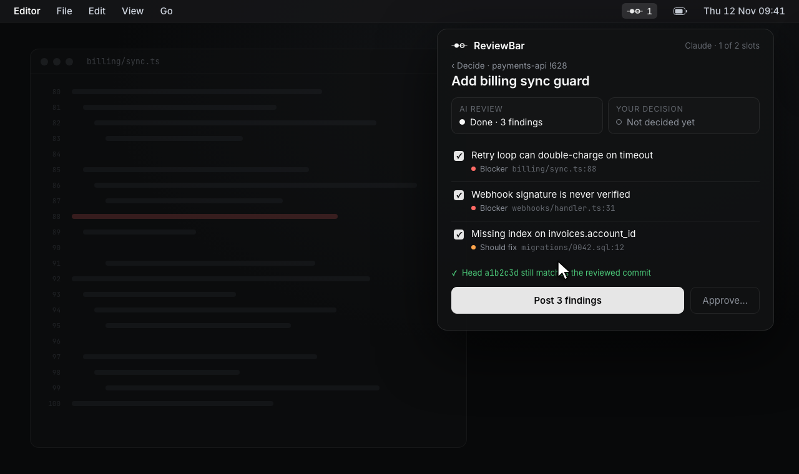

Every merge request, reviewed before you open it.
ReviewBar queues an AI review for every MR you're asked to review, runs it in the background, and lets you pick what gets posted. It uses the Claude Code or Codex login you already have, and never acts on its own.
macOS 14+ · GitLab + GitHub · Claude or Codex
What the AI did, and what you decided. Never the same thing.
A finished review isn't a decision. ReviewBar keeps them apart on every row, so "clean" never quietly turns into "approved".
Where the review is and what it found. Set by ReviewBar, updated live.
What happened on GitLab or GitHub because you chose it. Only you can change it.
From "you've been added as reviewer" to a decision.
It drafts. You decide. Nothing in between.
ReviewBar has write access to your merge requests because posting and approving are your job. It only uses that access when you press the button, and it checks first.
Never posts or approves on its ownEvery comment and every approval starts with you pressing a button, after a preview of exactly what will be sent. Head-SHA check before every writeBefore posting, ReviewBar compares the MR head with the commit it reviewed. They must match. Refuses when the MR changedIf new commits landed, posting is blocked and you are asked to re-review. Line anchors would point at the wrong code. Security findings never posted inlineAnything tagged Security stays in ReviewBar. You choose how to raise it, outside the public diff. Engines are read-onlyClaude and Codex receive the diff and return findings. They have no tokens and cannot touch GitLab or GitHub. Tokens stay in the KeychainGitLab and GitHub tokens are stored in the macOS Keychain, or reused from your glab and gh login, and only used for API calls you trigger or allow. All data stays on your MacReviews, findings and history live in a local database. There is no ReviewBar server. No telemetryNo analytics and no crash reporting.
Small, and built for the menu bar.
Free and open source.
brew trust ganeshmani/tap
brew install --cask ganeshmani/tap/reviewbarQuestions
Does ReviewBar ever post or approve on its own?
No. Every comment and approval needs you to press a button in a sheet that shows exactly what will be sent. Auto-review only means the review runs automatically; the decision never does.
Where does my code go?
The diff goes to the engine you choose, Claude or Codex, under your own account and its terms. Nothing goes to a ReviewBar server, because there isn't one.
Which review engines are supported?
Claude and Codex. You can set a default, switch per MR, or run both as a second opinion and see which findings they agree on.
Does it work with self-managed GitLab and GitHub Enterprise?
Yes. Add the host in Settings → Accounts. ReviewBar only talks to the hosts you add.
What does a review cost?
ReviewBar is free. Reviews run on your existing Claude or Codex plan, with no API key needed. It shows the estimated cost of every review and lets you set a daily cap; once it's reached, automatic reviews pause until the next day.
Can I contribute?
Yes. It's MIT licensed and written in Swift. Bug reports, ideas and pull requests are welcome on GitHub.
Does it replace human review?
No. It gives you a first read before you open the MR, so your time goes to judgement instead of hunting. You still read the code and you still decide.